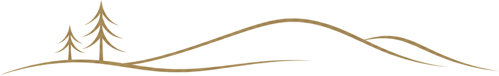

Tourism & Destination Development
Partnerships, product development and international market connections grounded in the realities of Lapland and northern tourism.
LAPLAND · FINLAND · INTERNATIONAL
LinArctic Oy is a consulting company with roots in tourism, energy management, forestry and renewable resources — bringing northern experience into practical development, partnerships and international projects.

01 / COMPANY
Northern industries are interconnected. Tourism depends on place. Energy depends on resources. Forestry depends on long-term stewardship. International growth depends on trusted relationships.
LinArctic works where these worlds meet — developing programmes, partnerships and commercial opportunities with an emphasis on practical execution, local knowledge and sustainable long-term value.
02 / EXPERTISE
Partnerships, product development and international market connections grounded in the realities of Lapland and northern tourism.
Development thinking around energy use, operating environments and resource-conscious solutions for organisations and projects.
Commercial and development perspectives shaped by forestry, land-based industries and the value created from northern resources.
Connecting people, organisations and opportunities around renewable resources, internationalisation and long-term development.
03 / APPROACH
“The North is not a theme. It is the operating environment.”
04 / CONTACT
For consulting, project development, partnerships and international cooperation.
info@linarctic.com ↗ Rovaniemi · Lapland · Finland